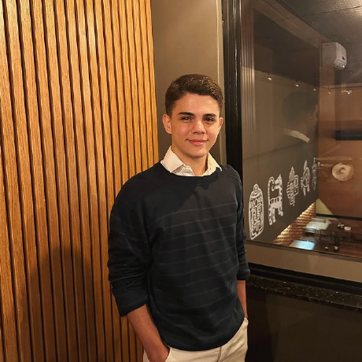

Sobre mim
Olá! Meu nome é Joshua Filipe Rodrigues Guirado.
Atualmente trabalho como consultor júnior, estou cursando o primeiro ano de Engenharia de Software na Unicesumar, estou aprendendo a programar e já estou estudando sobre IA.
Nasci dia 14 de janeiro de 2007 em Maringá no Paraná.

Esse sou eu!